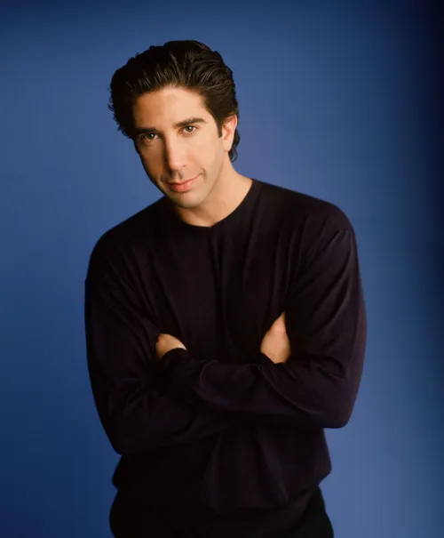
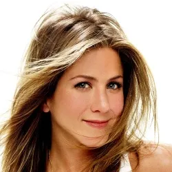
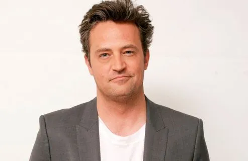
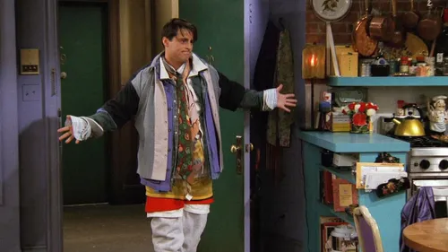
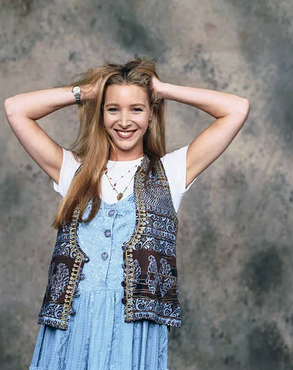

"Friends" est une sitcom américaine créée par David Crane et Marta Kauffman, diffusée de 1994 à 2004. La série suit un groupe d'amis vivant à New York et aborde les thèmes de l'amour, de l'amitié et des relations.
Personnages Principaux

Ross Geller

Rachel Green
Monica Geller

Chandler Bing

Joey Tribbiani

Phoebe Buffay
Quelques Épisodes Célèbres
La Propositions (Série 4, Épisode 24)
Le One with the Embryos (Série 4, Épisode 12)
Le One with All the Thanksgivings (Série 5, Épisode 8)
Le One Where Everybody Finds Out (Série 5, Épisode 14)